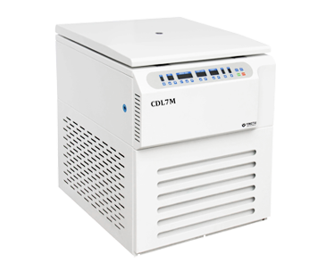

YINGTAI-CDL7M
Refrigerated Floor

CDL7M Largest Capacity Refrigerated Centrifuge (Floor Standing)
CE & ISO 13485 • FDA Standard Compliant
CDL7M adalah sentrifus lantai berpendingin berkapasitas ekstra besar yang dirancang khusus untuk pusat transfusi darah, rumah sakit tipe A, dan pabrik biofarmasi. Dilengkapi kompresor impor bebas CFC ramah lingkungan dan motor konversi frekuensi bebas perawatan yang menjamin kestabilan temperatur sempurna saat bekerja terus-menerus.
Kapasitas Maksimal: 6 x 2400 ml (14.4 Liter)
Kecepatan: 7.000 RPM (RCF 11.650 xg)
Suhu Akurat: -20°C s/d +40°C (±1°C)
Mendukung 12 - 16 Kantong Darah Sekaligus
Layar Sentuh HD 10 Inci & Kunci Pintu Otomatis